GRETNA
Sandy Wang
June 3, 2014
Contents
1 Overview
GRETNA toolbox has been designed for the graph-theoretical network analysis of fMRI data. It is a suite of MATLAB
functions and some MATLAB-based Interface to perform the process of conventional fMRI preprocessing, as well as to calculate
most frequently used network metrics, like small world, efficiency, degree, betweenness, assortativity, hierarchy, synchronization
and modularity.
2 Licence
GRETNA is distributed under the terms of the GUN General Public Licence as published by the Free Software Foundation
(version 3) and the details on ”copyleft” can be found at http://www.gnu.org/copyleft/.
3 Prerequisites
You need the following to run GRETNA on your computer:
- MATLAB: A high level numerical mathematics environment developed by MathWorks, Inc. Natick, MA, USA.
GRETNA requires MATLAB2010a or later version
- SPM8: SPM is made freely available to the (neuro)imaging community, to promote collaboration and a common
analysis scheme across laboratories. The software represents the implementation of the theoretical concepts of
Statistical Parametric Mapping in a complete analysis package.
- MRICroN’s dcm2nii: GRETNA included this package in its distribution. So you do not need download MRICroN’s
dcm2nii again.
- MatlabBGL: MatlabBGL is a MATLAB package for working with graphs. It uses the Boost Graph Library to
efficiently implement the graph algorithms. GRETNA included this package in its distribution. So you do not need
download MatlabBGL again.
- PSOM: The pipeline system for GNU Octave and Matlab(r) (PSOM) is a lightweght library to manage complex
multi-stage data processing. A pipeline is a collection of jobs, i.e. Matlab or Octave codes with a well identified
set of options that are using files for inputs and outputs. GRETNA included this package in its distribution. So
you do not need download PSOM again.
4 Installation
Warning: Please ensure your GRETNA path do not include blank!.
4.1 Command-line
If you do not have write permission for the path of GRETNA, please add GRETNA to MATLAB’s path with the following
command every time you launch MATLAB:
>> addpath(genpath(”/usr/local/share/software/GRETNA”));
Where ”/usr/local/share/software/GRETNA” is the location of your GRETNA.
4.2 Interface
To ensure GRETNA is automatically on your MATLAB path in the future, you need launch MATLAB and run the following
command to manage your MATLAB path:
Then:
- Click ”Add with Subfolders...” button and select your GRETNA path, i.e. ”/usr/local/software/GRETNA”
- Save your change. If you do not have the permission to save your change in GRETNA folder, please save pathdef.m
to another location where you will often launch MATLAB.
5 Toolbar
5.1 Save Default Configure
You can save your customized configuration for GRETNA, it will be the configure you want every time you open
GRETNA.
5.2 Manual
Click to open this manual.
5.3 Load Configure
To load the configuration you save.
5.4 Save Configure
To save the current configuration.
5.5 Run
To run the pipeline.
5.6 Refresh
As usual, the status of pipeline will be refreshed automatically. If you found any error message in MATLAB’s command-line
window, that is not the errors for pipeline but the errors for the refresh process. Please click this button to get the status of
pipeline.
5.7 Stop
Before you close the interfaces of GRETNA, please click this button if the pipeline is still running.
6 Input Format
For GRETNA, you can import functional image sequences to get network matrices, or you can import network matrices
directly.
6.1 Brain Image
GRETNA support fMRI sequences with raw DICOM data from scanners or 3D/4D NIfTI-1 format. You need select the
directory where you store all subjects, and also the key word as what you do in SPM8.
These fMRI data should be stored in 4 given rule:
- The sub-folders of subjects for DICOM.
- The sub-folders of subjects for 3D NIfTI-1 files.
- The sub-folders of subjects for 4D NIfTI-1 files.
- 4D NIfTI-1 files with subjects’ name.
6.2 Network Matrix
GRETNA support network matrix with MATLAB’s MAT-file or TEXT file. For MAT-file, you can use MATLAB’s norm or
sparse matrix to save your network. You can check your data by double-click in GRETNA’s interface.
These files should be stored in 3 given rule:
- The network matrices with different field name in MAT-file.
- The N × 1 cell of network metrices in MAT-file
- The network matrices in TEXT file.
7 Network Construction
For Slice Timing, Realign, Normalization, Smooth, you can read SPM manual to know more details.
7.1 DICOM to NIfTI
- Time Point: The number of time points for your data.
7.2 Delete Images
The first n volumes can be discarded for the signal equilibrium and participants’ adaptation to the scanning
noise.
- The delete type: Select ”Delete” or ”Retain” by double-click to choose the type for delete images.
- Select the number of image sequences to delete or retain by double-click.
7.3 Slice Timing
- Number of Slices: The number of slices in one volumn.
- TR (s): The time of repeat of fMRI signal.
- Slice Order: The sequence of Slice, e.g. interleaved (bottom - > up) [1:2:nslices 2:2:nslices].
- Reference Slice: The slice number as reference.
7.4 Realign
You can check subjects’ head motion parameter in the ”GretnaLogs/HeadMotion” folder.
7.5 Normalize EPI
- Source Image Path: The subjects’ parent directory of image that is warped to match the templates.
- Source Image Prefix: The prefix of image that is warped to match the templates.
- Voxel Sizes (mm): The voxel size of the written normalised images.
- Bounding Box: The bounding box (in mm) of the volume which is to be written.
7.6 Normalize T1
- T1 Path: The subjects’ parent directory of T1 image.
- DICOM to NIfTI: Execute DICOM to NIfTI or not.
- Coregister: Execute coregister T1 image to image that is warped to match the templates or not.
- Segment: Execute segment T1 image or not.
- Source Image Path: The subjects’ parent directory of image that is warped to match the templates.
- Source Image Prefix: The prefix of image that is warped to match the templates.
- T1 Image Prefix: The prefix of T1 image.
- Affine Regularisation: Select ”mni” or ”estern”.
- Mat Suffix: The suffix of transation matrix.
- Voxel Sizes (mm): The voxel size of the written normalised images.
- Bounding Box: The bounding box (in mm) of the volume which is to be written.
7.7 Smooth
- FWHM (mm): The full width half maximum of kernel.
7.8 Detrend
- The Degree of Polynomial Curve fitting: The degree of trend.
- Remain Mean: Remain the mean of time courses or not.
7.9 Filter
- TR (s): The time of repeat of fMRI signal.
- Band (Hz): The frequency band for temporal filtering.
7.10 Covariates Regression
- Global Signal: Regress out global signal or not.
- Brain Mask: The mask of whole brain.
- White Matter Signal: Regress out white matter signal or not.
- White Mask: The mask of white matter.
- CSF Signal: Regress out cerebrospinal fluid signal or not.
- CSF Mask: The mask of cerebrospinal fluid.
- Head Motion: Regress out head motion parameters or not.
- Text Parent Path: The subjects’ parent directory of head motion parameters’ text file.
- Text Prefix: The prefix of head motion parameters’ text file.
- Add Derivative (12): Regress out derivative head motion or not.
7.11 Voxel-based Degree
- Degree Mask: The mask that include all network nodes you want.
- Connectional Threshold: The threshold for correlation coefficient.
- Connectional Distance: The euclidean distance between nodes.
7.12 Functional Connectivity Matrix
- Label Mask: The template of brain which have different number for different region, e.g. AAL90.
8 Network Metrics
8.1 Network Configurations
- Network Type: Select ”weighted” or ”binarize” network.
- Network Cut: Remove the negative value in matrix or use the absolute value.
- Threshold Type: Select the method to cut the network matrices, ”sparsity” or ”correlation coefficient”. If DTI’s
network matrix, select ”correlation coefficient” and input the threshold of fiber number.
- Threshold Region: Select the region of threshold, it could be one value or a sequence.
- Random Network: The number of random network.
8.2 Network - Small World
8.3 Network - Efficiency
8.4 Network - Modularity
8.5 Network - Assortativity
8.6 Network - Hierarchy
8.7 Network - Synchronization
8.8 Node - Degree
8.9 Node - Efficiency
8.10 Node - Betweenness
9 Network Results
All results of network metric will be stored with MAT-file and TEXT-file both. You can pick these metrics from subjects’
diretory (e.g. ”MAT_TestMatrix_VAR_A”) one by one or use the integrated results (Results_*).
9.1 Individual Results
9.1.1 Network - Small World
You can load ”SWMat.mat” to get the following metrics.
- Cp: Clustering coefficient of network. 1×N array, N is the number of threshold sequence.
- Lp: Shortest path length of network. 1×N array, N is the number of threshold sequence.
- nodalCp: Clustering coefficient of node. M×N array, M is the number of node, N is the number of threshold
sequence.
- nodalLp: Shortest path length of node. M×N array, M is the number of node, N is the number of threshold
sequence.
- Cpzscore: The z-score of clustering coefficient of network, 1×N array, N is the number of threshold sequence.
The formula is following:
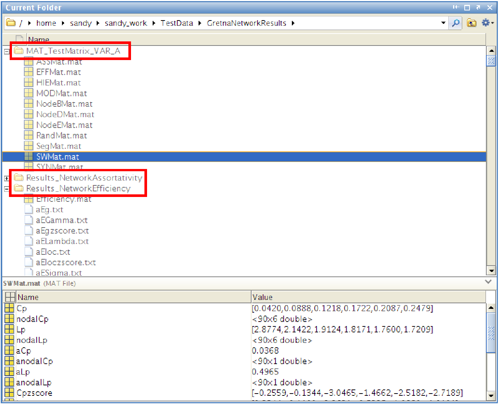 Cprand is a R×1 array, R is the number of randomized network. It is the clustering coefficient of randomized
network.
- Lpzscore: The z-score of shortest path length of network, 1×N array, N is the number of threshold sequence.
The formula is following:
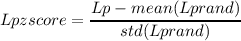 Lprand is a R×1 array, R is the number of randomized network. It is the shortest path length of randomized
network.
- Gamma: Gamma is the ratio of Cp and mean value of Cprand, 1×N array, N is the number of threshold sequence.
The formula is following:
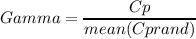
- Lambda: Lambda is the ratio of Lp and mean value of Lprand, 1×N array, N is the number of threshold sequence.
The formula is following:
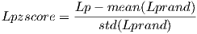
- Sigma: Sigma is the ratio of Gamma and Lambda. 1×N array, N is the number of threshold sequence.
The formula is following:
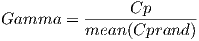
- aCp: The AUC of Cp.
- aLp: The AUC of Lp.
- anodalCp: The AUC of nodalCp. M×1 array, M is the number of node.
- anodalLp: The AUC of nodalLp. M×1 array, M is the number of node.
- aCpzscore: The AUC of Cpzscore.
- aLpzscore: The AUC of Lpzscore.
- aGamma: The AUC of Gamma.
- aLambda: The AUC of Lambda.
- aSigma: The AUC of Sigma.
9.1.2 Network - Efficiency
You can load ”EFFMat.mat” to get the following metrics.
- Eloc: Local efficiency of network. 1×N array, N is the number of threshold sequence.
- Eg: Global efficiency of network. 1×N array, N is the number of threshold sequence.
- nodalEloc: Local efficiency of node. M×N array, M is the number of node, N is the number of threshold sequence.
- nodalEg: Global efficiency of node. M×N array, M is the number of node, N is the number of threshold sequence.
- Eloczscore: The z-score of local efficiency of network, 1×N array, N is the number of threshold sequence.
The formula is following:
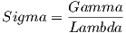 Cprand is a R×1 array, R is the number of randomized network. It is the local efficiency of randomized network.
- Egzscore: The z-score of global efficiency of network, 1×N array, N is the number of threshold sequence.
The formula is following:
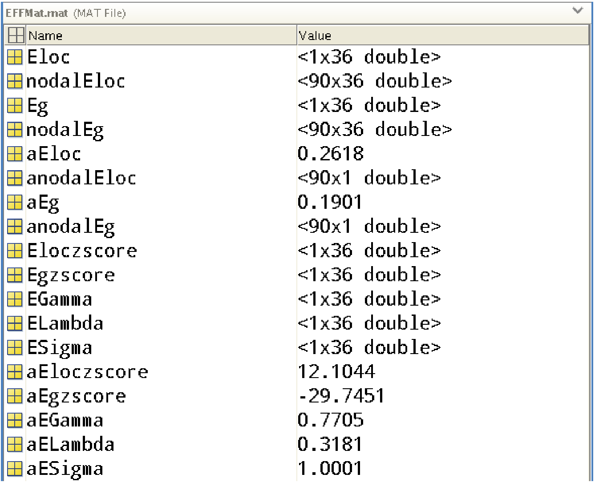 Egrand is a R×1 array, R is the number of randomized network. It is the global efficiency of randomized network.
- EGamma: EGamma is the ratio of Eloc and mean value of Elocrand, 1×N array, N is the number of threshold
sequence.
The formula is following:
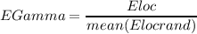
- ELambda: ELambda is the ratio of Eg and mean value of Egrand, 1×N array, N is the number of threshold
sequence.
The formula is following:
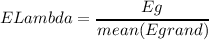
- ESigma: ESigma is the ratio of EGamma and ELambda. 1×N array, N is the number of threshold sequence.
The formula is following:
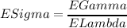
- aEloc: The AUC of Eloc.
- aEg: The AUC of Eg.
- anodalEloc: The AUC of nodalEloc. M×1 array, M is the number of node.
- anodalEg: The AUC of nodalEg. M×1 array, M is the number of node.
- aEloczscore: The AUC of Eloczscore.
- aEgzscore: The AUC of Egzscore.
- aEGamma: The AUC of EGamma.
- aELambda: The AUC of ELambda.
- aESigma: The AUC of ESigma.
9.1.3 Network - Modularity
You can load ”MODMat.mat” to get the following metrics.
9.1.4 Network - Assortativity
You can load ”ASSMat.mat” to get the following metrics.
9.1.5 Network - Hierarchy
You can load ”HIEMat.mat” to get the following metrics.
9.1.6 Network - Synchronization
You can load ”SYNMat.mat” to get the following metrics.
9.1.7 Node - Degree
You can load ”NodeDMat.mat” to get the following metrics.
- Deg: The degree of network, 1×N array, N is the number of threshold sequence.
- nodalDeg: The degree of node, M×N array, M is the number of node, N is the number of threshold sequence.
- aDeg: The AUC of Deg, 1×N array, N is the number of threshold sequence.
- anodalDeg: The AUC of nodalDeg, M×N array, M is the number of node, N is the number of threshold sequence.
9.1.8 Node - Efficiency
You can load ”NodeEMat.mat” to get the following metrics.
- Eg: The global efficiency of network, 1×N array, N is the number of threshold sequence.
- nodalEg: The global efficiency of node, M×N array, M is the number of node, N is the number of threshold
sequence.
- aEg: The AUC of Eg, 1×N array, N is the number of threshold sequence.
- anodalEg: The AUC of nodalEg, M×N array, M is the number of node, N is the number of threshold sequence.
9.1.9 Node - Betweenness
You can load ”NodeBMat.mat” to get the following metrics.
- Be: The betweenness of network, 1×N array, N is the number of threshold sequence.
- nodalBe: The betweenness of node, M×N array, M is the number of node, N is the number of threshold sequence.
- aBe: The AUC of Be, 1×N array, N is the number of threshold sequence.
- anodalBe: The AUC of nodalBe, M×N array, M is the number of node, N is the number of threshold sequence.
9.2 Integrated Results
9.2.1 Network - Small World
You can load ”SmallWorld.mat” or TEXT file which have the same names of metric to get the following metrics.
- Cp: Clustering coefficient of network. M×N array, M is the number of subject, N is the number of threshold
sequence.
- Lp: Shortest path length of network. M×N array, M is the number of subject, N is the number of threshold
sequence.
- nodalCp_Node*: Clustering coefficient of node, ”*” is the label of node, M×N array, M is the number of subject,
N is the number of threshold sequence.
- nodalLp_Node*: Shortest path length of node, ”*” is the label of node, M×N array, M is the number of subject,
N is the number of threshold sequence.
- Cpzscore: The z-score of clustering coefficient of network, M×N array, M is the number of subject, N is the
number of threshold sequence.
The formula is following:
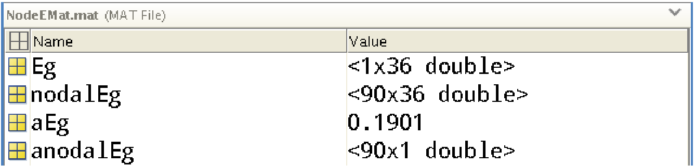 Cprand is a R×1 array, R is the number of randomized network. It is the clustering coefficient of randomized
network.
- Lpzscore: The z-score of shortest path length of network, M×N array, M is the number of subject, N is the number
of threshold sequence.
The formula is following:
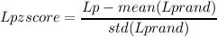 Lprand is a R×1 array, R is the number of randomized network. It is the shortest path length of randomized
network.
- Gamma: Gamma is the ratio of Cp and mean value of Cprand, M×N array, M is the number of subject, N is the
number of threshold sequence.
The formula is following:
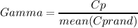
- Lambda: Lambda is the ratio of Lp and mean value of Lprand, M×N array, M is the number of subject, N is the
number of threshold sequence.
The formula is following:

- Sigma: Sigma is the ratio of Gamma and Lambda. M×N array, M is the number of subject, N is the number of
threshold sequence.
The formula is following:
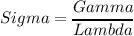
- aCp: The AUC of Cp. M×1 array, M is the number of subject.
- aLp: The AUC of Lp. M×1 array, M is the number of subject.
- anodalCp_Node*: The AUC of nodalCp, ”*” is the label of node. M×1 array, M is the number of subject.
- anodalLp_Node*: The AUC of nodalLp, ”*” is the label of node. M×1 array, M is the number of subject.
- aCpzscore: The AUC of Cpzscore. M×1 array, M is the number of subject.
- aLpzscore: The AUC of Lpzscore. M×1 array, M is the number of subject.
- aGamma: The AUC of Gamma. M×1 array, M is the number of subject.
- aLambda: The AUC of Lambda. M×1 array, M is the number of subject.
- aSigma: The AUC of Sigma. M×1 array, M is the number of subject.
9.2.2 Network - Efficiency
You can load ”Efficiency.mat” or TEXT file which have the same names of metric to get the following metrics.
- Eloc: Local efficiency of network. M×N array, M is the number of subject, N is the number of threshold sequence.
- Eg: Global efficiency of network. M×N array, M is the number of subject, N is the number of threshold sequence.
- nodalEloc_Node*: Local efficiency of node, ”*” is the label of node, M×N array, M is the number of subject, N
is the number of threshold sequence.
- nodalEg_Node*: Global efficiency of node, ”*” is the label of node, M×N array, M is the number of subject, N
is the number of threshold sequence.
- Eloczscore: The z-score of local efficiency of network, M×N array, M is the number of subject, N is the number
of threshold sequence.
The formula is following:
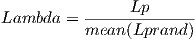 Cprand is a R×1 array, R is the number of randomized network. It is the local efficiency of randomized network.
- Egzscore: The z-score of global efficiency of network, M×N array, M is the number of subject, N is the number
of threshold sequence.
The formula is following:
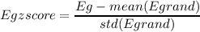 Egrand is a R×1 array, R is the number of randomized network. It is the global efficiency of randomized network.
- EGamma: EGamma is the ratio of Eloc and mean value of Elocrand, M×N array, M is the number of subject, N
is the number of threshold sequence.
The formula is following:
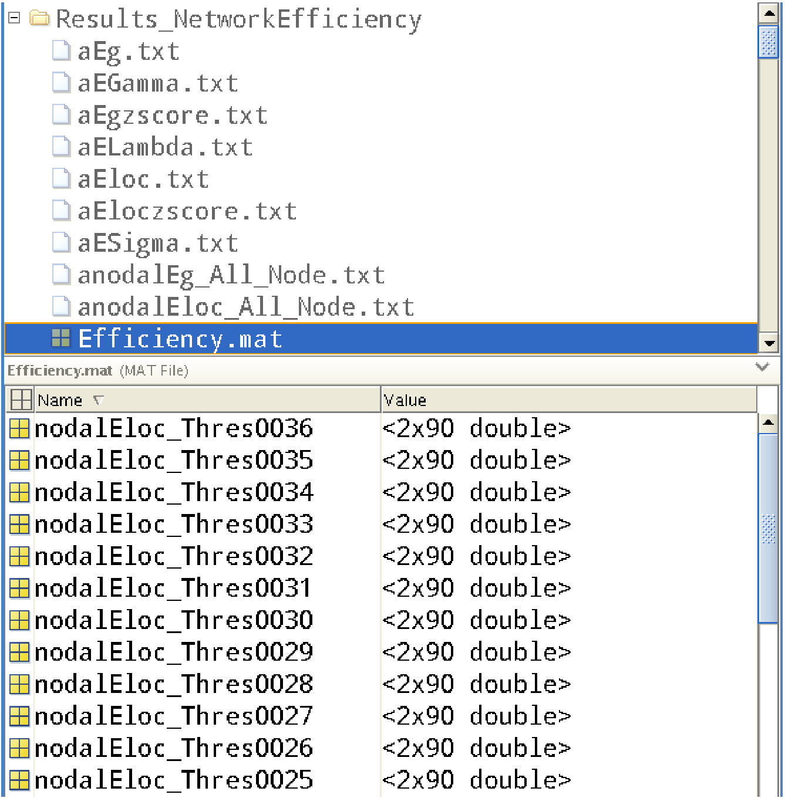
- ELambda: ELambda is the ratio of Eg and mean value of Egrand, M×N array, M is the number of subject, N is
the number of threshold sequence.
The formula is following:
- ESigma: ESigma is the ratio of EGamma and ELambda. M×N array, M is the number of subject, N is the number
of threshold sequence.
The formula is following:
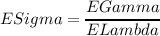
- aEloc: The AUC of Eloc. M×1 array, M is the number of subject.
- aEg: The AUC of Eg. M×1 array, M is the number of subject.
- anodalEloc_Node*: The AUC of nodalEloc. M×1 array, M is the number of subject.
- anodalEg_Node*: The AUC of nodalEg. M×1 array, M is the number of subject.
- aEloczscore: The AUC of Eloczscore. M×1 array, M is the number of subject.
- aEgzscore: The AUC of Egzscore. M×1 array, M is the number of subject.
- aEGamma: The AUC of EGamma. M×1 array, M is the number of subject.
- aELambda: The AUC of ELambda. M×1 array, M is the number of subject.
- aESigma: The AUC of ESigma. M×1 array, M is the number of subject.
9.2.3 Network - Modularity
You can load ”Modularity.mat” or TEXT file which have the same names of metric to get the following metrics.
9.2.4 Network - Assortativity
You can load ”Assortativity.mat” or TEXT file which have the same names of metric to get the following metrics.
9.2.5 Network - Hierarchy
You can load ”Hierarchy.mat” or TEXT file which have the same names of metric to get the following metrics.
9.2.6 Network - Synchronization
You can load ”Synchronization.mat” or TEXT file which have the same names of metric to get the following
metrics.
9.2.7 Node - Degree
You can load ”NodeDegree.mat” or TEXT file which have the same names of metric to get the following metrics.
- Deg: The degree of network, M×N array, M is the number of subject, N is the number of threshold sequence.
- nodalDeg_Node*: The degree of node, ”*” is the label of node, M×N array, M is the number of subject, N is
the number of threshold sequence.
- aDeg: The AUC of Deg, M×1 array, M is the number of subject.
- anodalDeg_Node*: The AUC of nodalDeg, ”*” is the label of node, M×1 array, M is the number of subject.
9.2.8 Node - Efficiency
You can load ”NodeEfficiency.mat” or TEXT file which have the same names of metric to get the following metrics.
- Eg: The global efficiency of network, M×N array, M is the number of subject, N is the number of threshold
sequence.
- nodalEg_Node*: The global efficiency of node, ”*” is the label of node, M×N array, M is the number of subject,
N is the number of threshold sequence.
- aEg: The AUC of Eg, M×1 array, M is the number of subject.
- anodalEg_Node*: The AUC of nodalEg, ”*” is the label of node, M×1 array, M is the number of subject.
9.2.9 Node - Betweenness
You can load ”NodeBetweenness.mat” or TEXT file which have the same names of metric to get the following
metrics.
- Be: The betweenness of network, M×N array, M is the number of subject, N is the number of threshold sequence.
- nodalBe_Node*: The betweenness of node, ”*” is the label of node, M×N array, M is the number of subject, N
is the number of threshold sequence.
- aBe: The AUC of Be, M×1 array, M is the number of subject.
- anodalBe_Node*: The AUC of nodalBe, ”*” is the label of node, M×1 array, M is the number of subject.